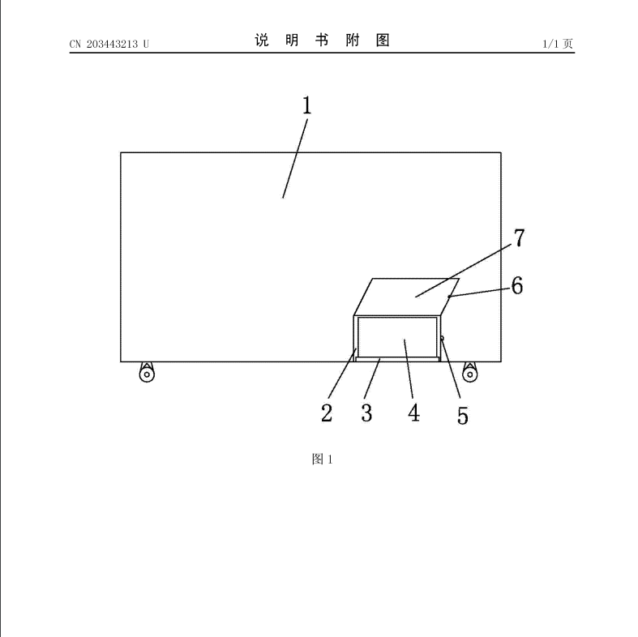

Abstract
The utility model relates to the technical field of freezers, in particular to a chargeable type freezer.
The chargeable type freezer comprises a freezer body, a storage chamber, a power source and a refrigerating device.
The freezer body is provided with the storage chamber, the storage chamber is provided with an upward opening,
the refrigerating device is arranged at the bottom of the freezer body, the power source is arranged in the freezer body,
the power source is electrically connected with the refrigerating device, the bottom of the freezer body is provided with a storage battery box,
the bottom of the storage battery box is provided with a base, a chargeable storage battery placed on the base is arranged in the storage battery box,
the storage battery box is provided with a storage battery box cover, a lock catch is arranged on the edge of the left side of the storage battery box cover,
and a lock groove corresponding to the lock catch is formed in the edge of the left side of the storage battery box.
The chargeable type freezer is reasonable in structure; when the freezer runs normally,
the chargeable storage battery can be charged automatically to store electric energy; when power failure occurs,
the chargeable storage battery releases electric energy to drive the refrigerating device to continue working,
and the freezer is prevented from being shut down, and therefore economic losses are reduced.
Description
A kind of rechargeable refrigerator-freezerb
Technical field
The utility model relates to refrigerator-freezer technical
field, relates in particular to a kind of rechargeable
refrigerator-freezer.
Background technology
Refrigerator-freezer is a kind of for storing the specialty
storage instrument of the freezing or chilled food of
various needs, by industry-by-industry and family, be
widely used, a lot of facilities of bringing to people's life,
but refrigerator-freezer must be could use the in the
situation that of energising, as run in the situation of
power failure or circuit accidental short circuit,
refrigerator-freezer quits work immediately, effect
freezing or refrigeration will be lost, food in storeroom
will thaw or melt, cause food stale, there are the impacts
such as peculiar smell, even can cause larger economic
loss, the out-of-work overlong time of refrigerator-
freezer, also can impact the refrigerating plant of
refrigerator-freezer, cause shortening the service life of
refrigerator-freezer.
Utility model content
The purpose of this utility model is to provide a kind of
rechargeable refrigerator-freezer, thus that it has is
rational in infrastructure, can store electrical energy,
prevent that power failure, power-off from reducing the
feature of economic loss.
For achieving the above object, the utility model adopts
following technical proposals:
A kind of rechargeable refrigerator-freezer, comprise
cabinet, storeroom, power supply, refrigerating plant,
described cabinet offers storeroom, described
storeroom opening upwards, described bottom of
cabinet bulk is provided with refrigerating plant, in
described cabinet, be provided with power supply,
described power supply is electrically connected to
refrigerating plant, described bottom of cabinet bulk
offers battery box, described battery box bottom is
provided with base, in described battery box, be
provided with the charging battery jar being positioned
on base, described battery box is provided with storage
battery case lid, described storage battery case lid
leftmost edge is provided with snap close, described
battery box leftmost edge is provided with the locked
groove corresponding with described snap close.
Wherein, described charging battery jar is electrically
connected to power supply.
Wherein, described charging battery jar is 36-72 volts of
storage batterys.
Wherein, the upper edge of described storage battery
case lid and battery box is hinged.
Adopt after said structure, the beneficial effects of the
utility model: the utility model comprises cabinet,
storeroom, power supply, refrigerating plant, described
cabinet offers storeroom, described storeroom opening
upwards, described bottom of cabinet bulk is provided
with refrigerating plant, in described cabinet, be provided
with power supply, described power supply is electrically
connected to refrigerating plant, described bottom of
cabinet bulk offers battery box, described battery box
bottom is provided with base, in described battery box,
be provided with the charging battery jar being
positioned on base, described battery box is provided
with storage battery case lid, described storage battery
case lid leftmost edge is provided with snap close,
described battery box leftmost edge is provided with the
locked groove corresponding with described snap close,
the utility model is rational in infrastructure, refrigerator-
freezer in normal operation, described charging battery
jar charges voluntarily and carries out electrical power
storage, when running into power failure, in the situation
of power-off, charging battery jar discharges electric
energy and drives refrigerating plant to work on, thereby
preventing that refrigerator-freezer from quitting work
reduces economic loss.
Accompanying drawing explanation
Fig. 1 is structural representation of the present utility model.

reference numeral
1, cabinet; 2, battery box;
3, base; 4, charging battery jar;
5, locked groove; 6, snap close;
7, storage battery case lid.
The specific embodiment
Below in conjunction with accompanying drawing, the
utility model is described in detail.
As shown in Figure 1, a kind of rechargeable refrigerator-
freezer, comprise cabinet 1, storeroom, power supply,
refrigerating plant, described cabinet 1 offers storeroom,
described storeroom opening upwards, described
cabinet 1 bottom is provided with refrigerating plant, in
described cabinet 1, be provided with power supply,
described power supply is electrically connected to
refrigerating plant, described cabinet 1 bottom offers
battery box 2, described battery box 2 bottoms are
provided with base 3, in described battery box 2, be
provided with the charging battery jar 4 being positioned
on base 3, described battery box 4 is provided with
storage battery case lid 7, described storage battery
case lid 7 leftmost edges are provided with snap close
6, described battery box 4 leftmost edges are provided
with the locked groove 5 corresponding with described
snap close 6, described battery box 4 can be located at
cabinet 1 optional position, bottom, but preferably near
power supply, reduce wiring, described battery box 2
inwalls can be provided with the diaphragms such as
sponge, prevent that charging battery jar 4 is in the
interior friction of battery box 2, described charging
battery jar 4 only just can be since discharging electric
energy under refrigerator-freezer powering-off state,
continue to make refrigerating plant work, thereby
prevent because of power-off, have a power failure and
cause refrigerator-freezer to quit work, extended the
service life of refrigerator-freezer simultaneously and
reduced economic loss.
In the present embodiment, described charging battery
jar 4 is electrically connected to power supply, and
described charging battery jar 4 is 36-72 volts of
storage batterys, described charging battery jar 4 also can be
connected with power supply by copper sheet, reduce
institute and take up space, described charging battery
jar 4 magnitudes of voltage are preferably standard
fitting, convenient repairing or replacing.
In the present embodiment, described storage battery
case lid 7 is hinged with the upper edge of battery box 2,
and described storage battery case lid 7 can also also
can be bolted on battery box 2 for being directly buckled
on battery box 2, as long as can easily open and close,
facilitates putting into or taking out of charging battery
jar 4.
Above content is only preferred embodiment of the
present utility model, for those of ordinary skill in the art,
according to thought of the present utility model, all will
change in specific embodiments and applications, this
description should not be construed as restriction of the
present utility model.